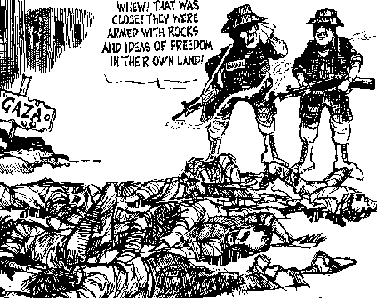

Petitions
- Sign the petition from Ittijah asking for international protection
for Palestinian citizens in Israel. The petition can be found here
- A petition calling for the prosecution by internation tribunal of those responsible for the killing of 12-year old Mohammed Dura, can be found at http://www.durra.org For more information about Mohammed, please see the In Focus section of the site.
return to top
Responding to the media

- MEDIA TALKING POINTS: We've received many emails commenting on the
biased media coverage of much of the international media. The Arab- American
Anti Discrimination Committee have put together an excellent guide for responding
to this media coverage. You can find it here.
- Visit the Media Section of this site for extensive commentary on how the international media is covering the present events.
- See the new website, Palestinian Media Watch Campaign. Palestine Media Watch was established to help its members
keep an eye on biased and unfair opinion pieces, columns, and newspaper
and magazine stories on the Palestinian crisis, so that a swift reaction
can be undertaken in the form of letters to the editor, columns, and
opinion pieces. The site is located at http://www.pmwatch.org
return to top
Tips for organizing actions
- AL AWDA GUIDE FOR EFFECTIVE ACTION: An excellent guide to organizing
demonstrations and different events. Suggestions for actions, extensive list
of media contacts and tips for talking to the media. Read the guide here.
return to top
Protest Letters
- A selection of letters to media outlets, politicians
and others regarding the current conflict. If you have written a letter, please
send a copy to one of the addresses listed in the contact section of this website
and we will endeavour to publish it here. Updated 20 October
return to top
Other actions
return to top